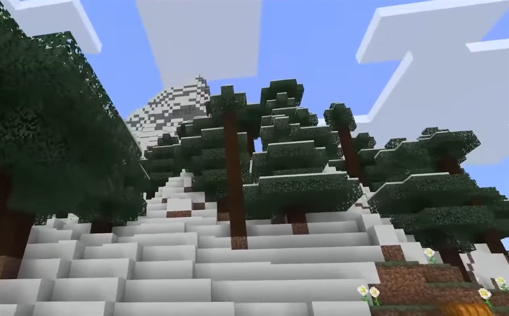
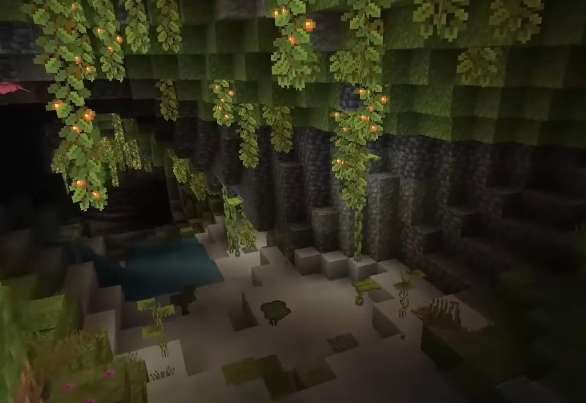
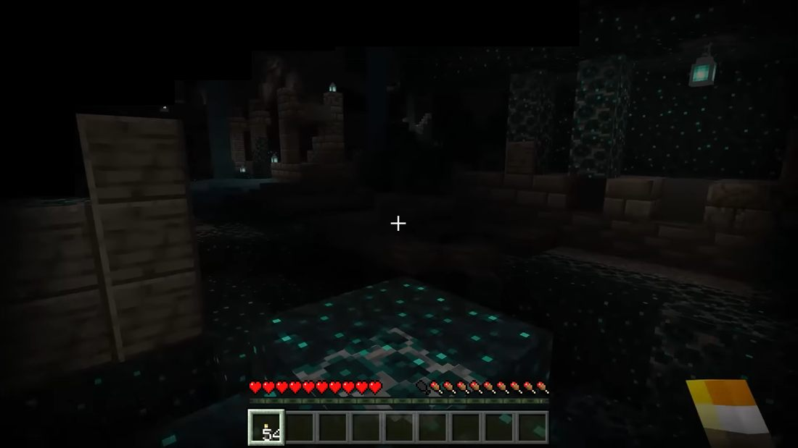
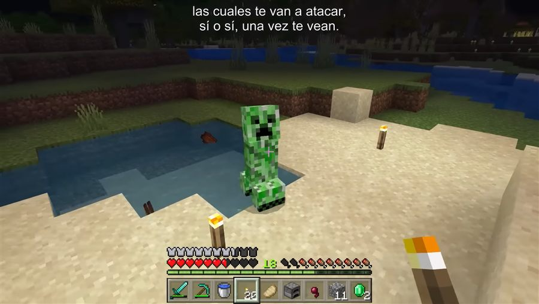
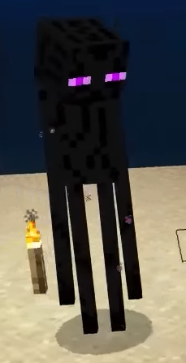

沒有人規定你要做什麼
麥塊沒有通關條件、沒有分數、沒有排名。孩子生活裡幾乎所有事——課表、作業、才藝班——目標都是別人訂的。麥塊是少數他們百分之百掌控的世界。
這個「自主權」比畫面好看重要一百倍。
寫給爸媽的
孩子整天在玩 Minecraft、看麥塊影片，你想知道那到底有什麼好玩的——
更想知道，自己能不能一起進去。

麥塊沒有通關條件、沒有分數、沒有排名。孩子生活裡幾乎所有事——課表、作業、才藝班——目標都是別人訂的。麥塊是少數他們百分之百掌控的世界。
這個「自主權」比畫面好看重要一百倍。
蓋一棟房子，它就在那裡，明天登入還在。這種創造之後留下痕跡的滿足感，對孩子非常強烈。
紅石電路其實就是邏輯閘，玩到深處有人用麥塊做出計算機。自動化農場、刷怪塔、物品分類系統，都是真的系統設計。
很多孩子是從紅石開始理解「條件」「迴圈」「訊號」的。
多人伺服器、小遊戲（起床戰爭、空島、躲貓貓）、跟同學約好一起蓋。這是社交，不只是遊戲。
這點最常被大人誤解成「看別人玩很浪費時間」。實際上分成幾種完全不同的需求：
既然要看，看英文的。孩子為了看懂內容會主動去理解英文，這是最無痛的語言環境——比背單字有效得多。而且國外的技術類頻道講得比較深。
| 頻道 | 類型 | 為什麼值得看 |
|---|---|---|
| Mumbo Jumbo | 紅石工程 | 全世界最知名的紅石頻道，訂閱數近千萬。把電路原理講得像在拆玩具，孩子看他的影片等於在學邏輯設計 |
| Grian | 建築 | 建築教學的代表人物。從房子的比例、材質搭配到細節裝飾，是真的在教設計 |
| Hermitcraft | 多人企劃 | 一群創作者共用同一個世界，各自拍自己的視角。Mumbo 和 Grian 都在裡面。適合看「合作與衝突怎麼處理」 |
| DanTDM | 綜合娛樂 | 老牌大台，以家庭友善著稱。語速中等，適合已經有點英文基礎的孩子 |
| Stampy | 低齡入門 | 以貓的角色演出，語速慢、用詞簡單、完全無暴力語言。小學低年級的英文入門首選 |
先自己看一集。頻道的風格會隨時間改變，早年家庭友善的創作者後來轉向其他題材的例子不少。花十分鐘確認，比事後補救容易。
打開英文字幕。YouTube 的自動字幕已經夠準。聽不懂的地方能看到拼字，學習效果差很多。
從紅石或建築類開始。這類影片有明確的知識內容，孩子看完會想動手做；純娛樂類則容易一集接一集停不下來。
這是威力最大的一招。問一句「這個紅石是怎麼運作的？」然後真的聽完。孩子很少有機會在大人面前當專家，那個成就感會讓他們主動想分享更多。
開個區域網路世界跟他們一起生存。你會挖到岩漿、會被苦力怕炸掉、會迷路——這些全是加分。他們會樂於保護你、指揮你、幫你蓋房子。
你不是在「監督」，你是隊友。
挑他們最愛的一個頻道，陪看完整一集，記住實況主的名字跟口頭禪。之後在餐桌上引用一次，效果勝過十次「你今天在幹嘛」。
別把麥塊當談判籌碼。「不寫作業就不能玩」會讓他們把你和這件喜歡的事放在對立面。
時間管理要用自然斷點。麥塊沒有回合，隨時中斷等於丟進度，所以「還有五分鐘」會引發對抗。改成「蓋完這段」或「回到床邊存檔就下線」，衝突會少很多。
麥塊不是網頁遊戲，要下載安裝，而且一定需要帳號（微軟帳號）。
| Java 版 | 基岩版 Bedrock | |
|---|---|---|
| 平台 | 只有電腦（Win / Mac / Linux） | 手機、平板、Switch、PS、Xbox、Windows |
| 模組 | 超多，MOD 生態全在這 | 幾乎沒有，只有官方市集 |
| 跟誰一起玩 | 只能跟 Java 版 | 可跨裝置互連 |
| YouTube 影片多半是 | ✅ 這個 | 部分小遊戲伺服器 |
Windows 電腦的最佳選擇：官網有賣「Minecraft: Java & Bedrock Edition for PC」同捆包，一次購買兩個版本都有。手機版要另外在 App Store / Google Play 買，和 PC 版是分開的兩筆。
必須有微軟帳號，2023 年之後 Mojang 帳號已全面整併。給孩子的正確做法是：
用你的微軟帳號建立 Microsoft Family Safety 家庭群組（你當家長）
在群組裡幫孩子建立兒童帳號（未滿 13 歲需要家長同意，系統會引導）
遊戲買在孩子的帳號上
這樣做你會拿到遊戲時間限制、消費額度控管、活動報告，而且孩子有自己的角色和世界。買在你帳號上雖然省事，但沒有家長控制，你們也沒辦法同時上線一起玩。
兩個孩子想同時玩 ＝ 需要兩個帳號、兩份遊戲。授權綁帳號，無法共用。
買完裝好，孩子想跟同學連線時跳出「無法進行多人遊戲」——這不是遊戲壞掉，是微軟帳號的 Xbox 隱私設定預設把兒童帳號的線上遊玩關掉了。
要到微軟帳號的隱私設定裡，把「可以參加多人遊戲」「可以和其他人交流」打開。這個開關同時也是你控管線上社交的地方，值得先了解它在哪。
到 minecraft.net（只認這個官網）
用要擁有遊戲的帳號登入
選 PC 同捆包購買
下載 Minecraft Launcher，登入後就能安裝、啟動
價格不在這裡列數字——台灣區定價和促銷會變動，各平台也不同，請以官網登入後顯示的為準。
網路上有大量「麥塊免費下載」「便宜帳號」的網站，全是盜版或盜來的帳號——買來的帳號隨時會被回收，且常挾帶惡意程式。
認明 minecraft.net、App Store、Google Play、各主機官方商店，其他一律不要碰。
麥塊天黑就出怪，第一天大約 10 分鐘要完成這一串：
徒手打樹 → 拿木頭 → 合成木板 → 做工作台
工作台做木鎬 → 挖石頭（至少 20 顆）
石頭做石鎬、石斧、石劍
挖到煤炭 → 木棒 ＋ 煤 ＝ 火把
打羊拿羊毛（3 羊毛 ＋ 3 木板 ＝ 床）
挖進山壁封住洞口，或蓋個小土屋，睡覺跳過夜晚
床非常關鍵：睡覺不只跳過夜晚，還會設定重生點。沒床死掉會被丟回出生點，可能離家幾千格。
木 → 石 → 鐵 → 鑽石 → 獄髓 Netherite
前三階很快，鑽石是分水嶺，獄髓要去下界找「遠古遺骸」。
挖鑽石的高度（1.18 改版後）：世界最底是 Y = −64，鑽石在 Y = −59 附近最密集。挖到那個深度後開一條長長的水平隧道，比亂挖有效率得多。按 F3 可以看座標（Java 版）。

不要直直往下挖——會掉進岩漿或深洞，這是最經典的死法。
隨身帶水桶——可以澆熄岩漿，也能在高處放水防摔。



這幾個詞你知道了，餐桌對話就接得上：
| 名詞 | 是什麼 |
|---|---|
| 苦力怕 Creeper | 綠色的，會無聲靠近然後爆炸。麥塊的招牌 |
| 終界使者 Enderman | 高瘦黑色，盯著牠的眼睛看牠會暴怒 |
| 紅石 Redstone | 遊戲內的電路系統，能做自動門、電梯、計算機 |
| 下界 Nether | 地獄維度，10 個黑曜石搭門框 ＋ 打火石點燃 |
| 終界 End | 最終維度，打敗終界龍＝通關 |
| 附魔 Enchant | 給裝備加能力（挖更快、耐久更久） |
| 種子碼 Seed | 世界的生成亂數碼，同一組碼 ＝ 同一個世界 |
| 刷怪塔／農場 | 自動化生產怪物掉落物或作物的建築，玩家的驕傲 |
穩定的家 ＋ 箱子分類 — 麥塊真正的敵人是「東西太亂」
鐵農場／作物農場 — 資源自由的起點
下界探險 — 拿烈焰棒、找遠古遺骸
村民交易 — 用綠寶石換附魔書，比自己附魔穩定太多
打終界龍 — 名義上的通關，但多數玩家打完才真正開始玩
中文版完整度極高，合成表、生成高度、機制細節都在這，比任何影片準確。查東西優先用它。
唯一的正版購買管道，也是下載 Launcher 的地方。
2009 年初代版本，瀏覽器免費玩、免帳號。
建築和紅石教學看影片比看文字好懂。搜「麥塊 生存 新手」「紅石 教學」。
官方內建的引導系統，照著解就是一條主線。
別把攻略讀完再上場。
你如果讀完攻略進去，什麼都會，孩子就沒有教你的機會了——那才是最可惜的。
建議你只記「第一晚 SOP」和那張名詞表，其他全部留白，進去之後大方問：
「這個怎麼弄？」「為什麼牠會爆炸？」
讓他們當老師，比你當高手有用一百倍。